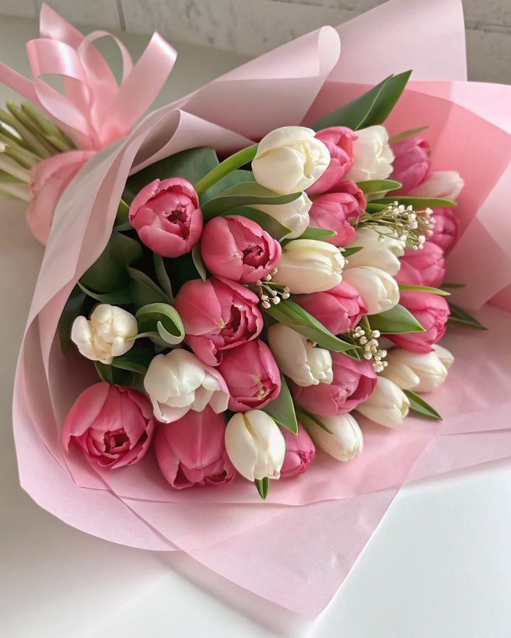
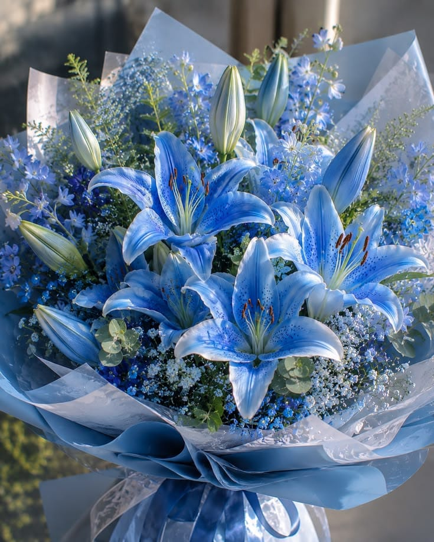
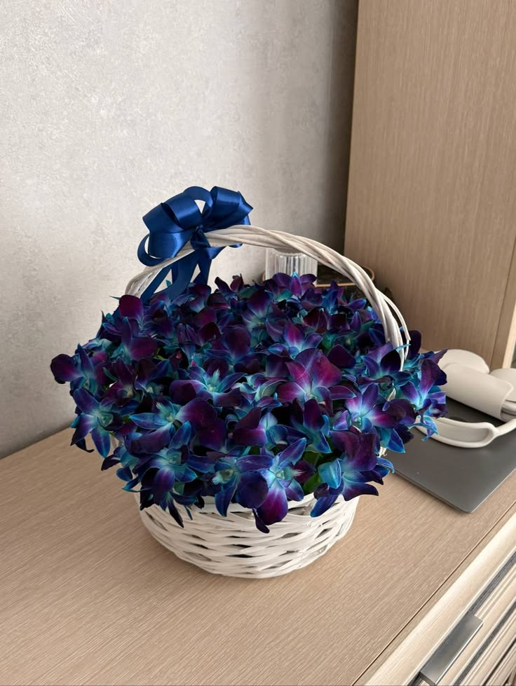
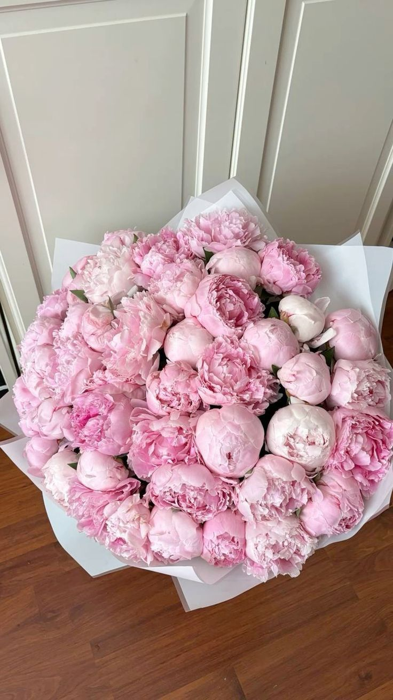
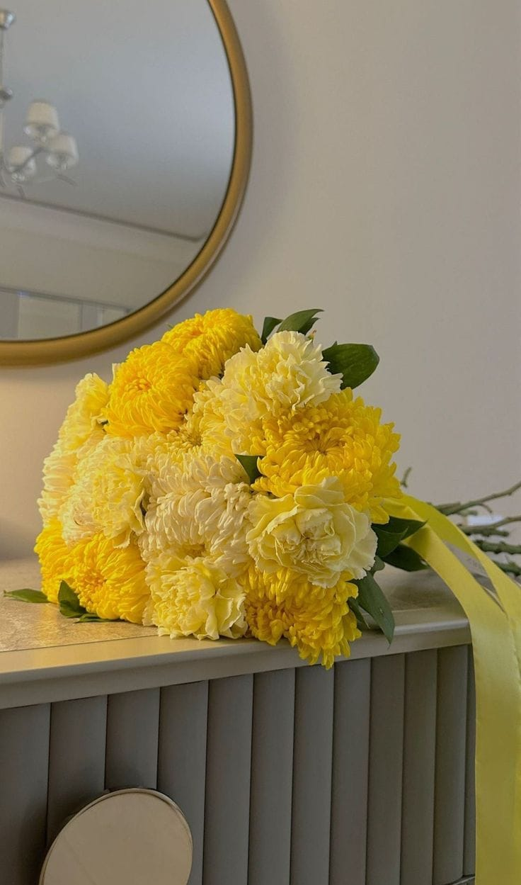
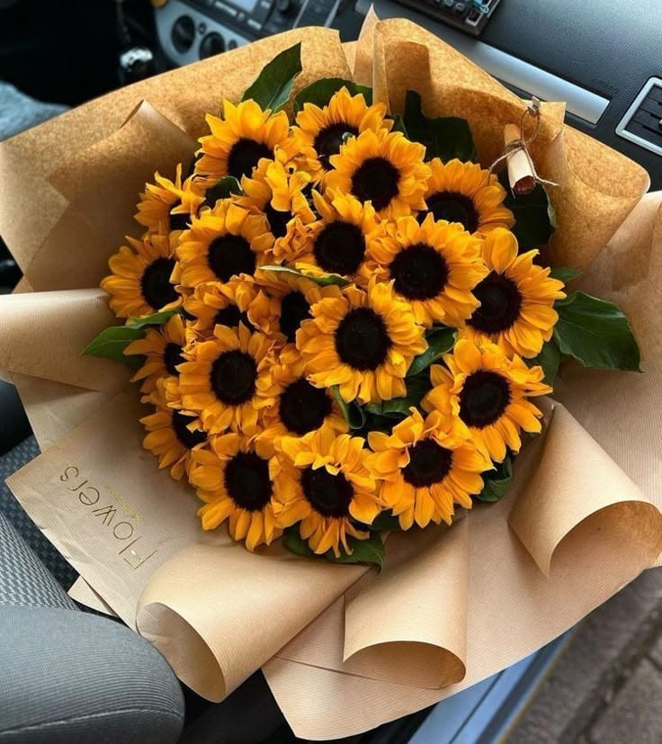
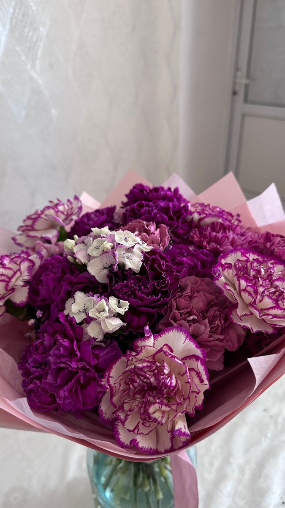

As Nossas 9 Variedades Nobres
Explore a nossa vasta seleção botânica importada e nacional, tratada com o máximo rigor técnico e artístico.

1. Tulipas Holandesas
Símbolo de elegância clássica, disponíveis em tons suaves e vibrantes, trazidas diretamente de produtores de elite.

2. Lírios Imperiais
Grandiosos e perfumados, os lírios conferem uma presença monumental e requintada a qualquer espaço ou celebração.

3. Rosas Brancas de Jardim
A pureza em forma de pétala. Selecionadas pela sua abertura perfeita e durabilidade impressionante.

4. Orquídeas Exóticas
Sofisticação duradoura. Peças botânicas vivas que adicionam um toque de luxo intemporal a interiores exigentes.

5. Peónias Rosa-Velho
Volumosas e românticas, as peónias são o ápice do romantismo e da alta decoração em eventos de prestígio.

6. Hortênsias Celestiais
Pétalas fartas e elegantes em tons amarelados e pastéis, perfeitas para arranjos estruturados de grande impacto.

7. Girassóis Imperiais
Radiantes e imponentes, trazem luz, energia vibrante e alegria sofisticada para qualquer ambiente corporativo ou residencial.

8. Cravos de Poeta Finos
Delicados e de textura rica, conferem um charme clássico, durabilidade excecional e arranjos denso-florais.

9. Eucalipto & Folhagens Nobres
A base aromática perfeita para qualquer bouquet de luxo, trazendo movimento natural e um aroma fresco inconfundível.